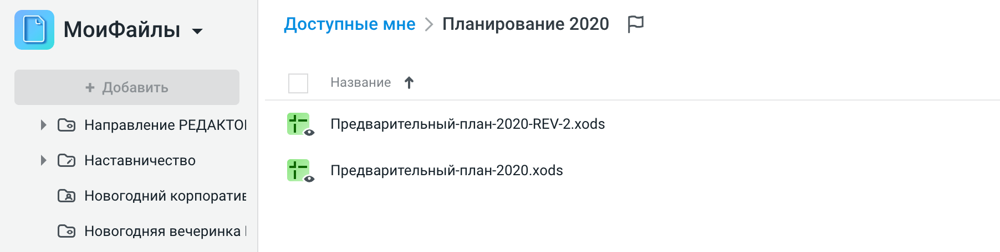
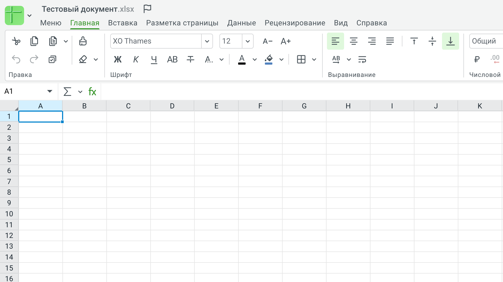
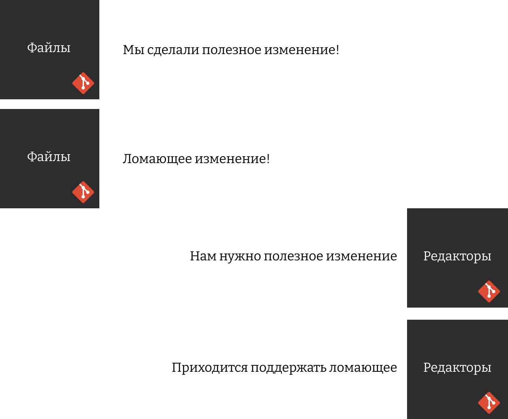
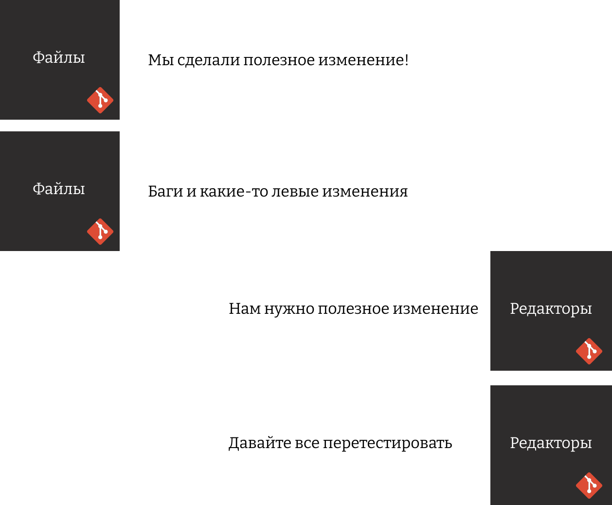

От мечты к провалу
как загубить фронтенд-проект
Бабочка взмахивает крыльями в Китае и колеблет воздух, и, в конце концов,
на Нью-Йорк обрушивается шторм
Эффект бабочки
Небольшие решения
— большие последствия
План на сегодня
- DRY
- Код
- Части проекта
- Конфиги
- Имена и типы
- Большие изменения
- Перформанс
DRY
Don’t repeat yourself

А всегда ли это работает?
function ProductCard({ product }) {
return (
<div className="product-card">
<img src={product.image} alt={product.name} />
<h3>{product.name}</h3>
<div className="price">
<span className="current-price">${product.price}</span>
{product.oldPrice && (
<span className="old-price">${product.oldPrice}</span>
)}
</div>
<button onClick={() => addToCart(product.id)}>
В корзину
</button>
</div>
);
}
| 20 строк кода |
| 1 параметр (product) |
| 30 секунд на понимание логики |
| 3-5 тестовых случаев для полного покрытия |
function ProductCard({ product, layout = 'default' }) {
const renderPrice = () => {
if (layout === 'compact') {
return <span className="price-compact">${product.price}</span>;
}
return (
<div className="price">
<span className="current-price">${product.price}</span>
{product.oldPrice && (
<span className="old-price">${product.oldPrice}</span>
)}
</div>
);
};
const renderButton = () => {
const buttonText = layout === 'minimal' ? 'Купить' : 'В корзину';
return (
<button onClick={() => addToCart(product.id)}>
{buttonText}
</button>
);
};
return (
<div className={`product-card product-card--${layout}`}>
<img src={product.image} alt={product.name} />
<h3>{product.name}</h3>
{renderPrice()}
{renderButton()}
</div>
);
}
| 50 строк кода (увеличение в 2.5 раза) |
| 4 параметра |
| 3 минуты на понимание |
| 10 тестовых случаев |
function ProductCard({
product,
layout = 'default',
theme = 'light',
showRating = true,
showBadge = true,
buttonAction = 'cart',
priceFormat = 'standard'
}) {
const getLayoutConfig = () => {
const configs = {
default: { imageSize: 'large', titleSize: 'h3', spacing: 'normal' },
compact: { imageSize: 'medium', titleSize: 'h4', spacing: 'small' },
minimal: { imageSize: 'small', titleSize: 'h5', spacing: 'tiny' },
featured: { imageSize: 'xlarge', titleSize: 'h2', spacing: 'large' }
};
return configs[layout] || configs.default;
};
const renderPrice = () => {
const formatters = {
standard: () => renderStandardPrice(),
compact: () => renderCompactPrice(),
currency: () => renderCurrencyPrice()
};
return formatters[priceFormat]?.() || formatters.standard();
};
// ... остальная логика
}
| 150 строк кода |
| 8 параметров конфигурации |
| 15 минут на понимание логики |
| 30+ тестовых случаев |
Вы еще помните чего мы там DRYим?
Может повторение не так и страшно?
<CompactProductCard product={product} />
<FeaturedProductCard product={product} />
<MinimalProductCard product={product} />
Композиция
<Card>
<CardImage src={product.image} />
<CardTitle>{product.name}</CardTitle>
<CardPrice price={product.price} oldPrice={product.oldPrice} />
<CardButton onClick={() => addToCart(product.id)}>
В корзину
</CardButton>
</Card>
А что выбрать?
дублировать код до понимания реальных паттернов
золотая середина между DRY и WET
- Дождитесь появления абстракции в трех или более местах
- Убедитесь, что паттерн действительно устойчив
- Создавайте абстракции на основе реального опыта, а не предположений
- Оптимизируйте код для изменений, а не для элегантности
Синьорный подход
Если будет меняться — сделай гибче
Не будет меняться — копируй
Нужно погрузиться в бизнес
Файлы
Редакторы
Ломающие изменения
Баги
А что есть common!?
- Авторизация
- Обшие компоненты
- Веб клиент
- Какие-то виджеты
Синьорный подход
- Семантика важна
- Важно быть простым и понятным
- Последствия решений
DRY в конфигурации
или конфигурация ради конфигурации
Webpack
const path = require('path');
module.exports = {
entry: './src/index.js',
output: {
path: path.resolve(__dirname, 'dist'),
filename: 'bundle.js',
clean: true,
},
mode: 'development',
module: {
rules: [
{
test: /\.(js|jsx)$/,
exclude: /node_modules/,
use: {
loader: 'babel-loader',
options: {
presets: ['@babel/preset-env', '@babel/preset-react'],
},
},
},
{
test: /\.css$/,
use: ['style-loader', 'css-loader'],
},
],
},
resolve: {
extensions: ['.js', '.jsx'],
},
devServer: {
static: path.join(__dirname, 'dist'),
compress: true,
port: 3000,
},
};
Все просто
module.exports = require('@my-company/configs/webpack.config');
— Мне нужно добавить плагин!
Все просто
const commonConfig = require('@my-company/configs/webpack.config');
// свой плагин
module.exports = {
...commonConfig,
plugins : [mySuperPlugin]
}
Все просто
const commonConfig = require('@my-company/configs/webpack.config');
module.exports = {
...commonConfig,
plugins : [
...commonConfig.plugins,
mySuperPlugin
]
}
- Некоторые плагины нужно перенастраивать
- У всех разные правила
- У всех разные сервера разработки
Что происходит дальше
- Нам нужен frontops!
- Пишем фреймворк на настройке конфигов
- Не меняй корневой пакет, не понятно где все упадет
Craco
allows you to get all of the benefits of Create React App without ejecting
CREATE REACT APP CONFIGURATION OVERRIDE
— Зачем мы это делали?
— Хотели единый конфиг!
— Зачем нам единый конфиг?
— Чтобы не настраивать webpack каждый раз, чтобы менять все настройки в одном месте
— Сколько стоит настроить вебпак для каждого проекта и менять каждый конфиг отдельно?
— Да фиг его знает!
Лучше иметь одну стратегию
- Переиспользовать и запрещать менять
- Не переиспользовать
Синьорный подход
Важно придерживаться одной стратегии
Имена и типы

type LoginData = {
"login": "string",
"password": "string"
}
JSON
{
"username": "aleksei.zolotykh",
"password": "123456"
}
const login = ({login, password}) => {
return fetch('/login', {
body: JSON.stringify({username: login , password}
})
}
const users = [
{login: "admin", ...},
{login: "superadmin", ...},
{login: "zolotyh", ...}
]
users.map(
(user) => {
...user,
username: user.login
}
)
{
"login": "admin",
"username": "admin,
}
users.map(
({login, ...rest}) => {
...rest,
username: login
}
)
openapi: 3.0.0
...
paths:
/auth/login:
post:
...
requestBody:
required: true
content:
application/json:
schema:
$ref: '#/components/schemas/LoginCredentials'
...
components:
schemas:
LoginCredentials:
type: object
required:
- username
- password
properties:
username:
type: string
description: User's username or email
example: johndoe
password:
type: string
description: User's password
format: password
example: securePassword123!
writeOnly: true
interface User {
id?: string; // теоретически может быть undefined
name: string;
}
function processUser(user: User) {
// Ошибка TS: 'id' возможно undefined
console.log(user.id.toUpperCase());
}
interface User {
id: string;
name: string;
}
type UnsavedUser = Omit<User, "id">
Про незаконченные миграции
Большая миграция через правило туриста
- Я хочу уйти от Redux к Redux Saga
- Вот прототип
- Вот первая фича на Saga
- Остальное по правилу туриста
A scout leaves no trace… and tries to leave the world a little better than he found it
Теперь у нас есть
- Redux
- Redux-saga
- Redux-toolkit
- RxJS
Надежда, что когда-нибудь это получится
Что нужно было сделать
- Будет ли миграция оправдана?
- Можете ли вы позволить себе миграцию?
- Кто будет отвечать за миграцию?
Знай cвои данные!
Что нужно было сделать
- Будет ли миграция оправдана?
- Можете ли вы позволить себе миграцию?
- Кто будет отвечать за миграцию?
Сеньорный подход
Умей доводить дела до конца
Вывод 1
Никто не хотел сделать плохо
Вывод 2
Задача не заканичвается коммитом в мастер
Вывод 3
Все о чем мы говорили — это на самом деле про софты